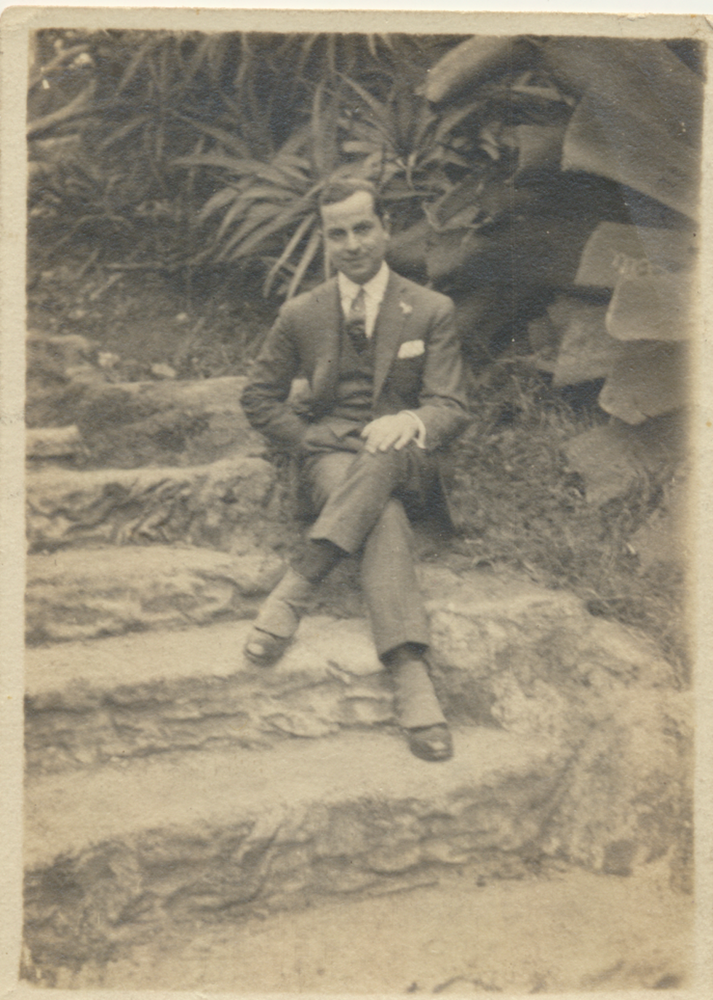

El doble exilio de Eduardo Blanco-Amor, el genio olvidado de las letras gallegas que vivió en Argentina y fue amigo de Lorca
 Eduardo Blanco-Amor
Eduardo Blanco-AmorCARLOS PRIMO-07 OCT 2023 - 05:30 CEST
Volver al inicio Volver a CulturaEl doble exilio de Eduardo Blanco-Amor, el genio olvidado de las letras gallegas que vivió en Argentina y fue amigo de Lorca
 Eduardo Blanco-Amor Detrás de aquella novela presentada bajo seudónimo estaba un nombre que no era desconocido para la cultura de la época: el escritor gallego Eduardo Blanco-Amor (1897-1979), un poeta, ensayista y narrador afincado en Buenos Aires. Cuando finalmente se publicó, en 1963, inició un periplo con la censura que, a la larga, hizo de ella una rareza y una novela de culto, escasamente difundida y casi maldita. Ahora, el catedrático de Literatura de la UCM Emilio Peral Vega la ha recuperado en una edición crítica para la colección Letras Hispánicas de Cátedra, lo que supone de facto su reintegración en el canon de la narrativa española del XX, y también un ajuste de cuentas con la historia. Blanco-Amor no solo corrigió el manuscrito original de los Seis poemas galegos del granadino; también fue su confidente sentimental, tal y como demuestra la correspondencia entre ambos. Pronunció conferencias sobre él, elogió los Sonetos del amor oscuro cuando apenas eran conocidos por una minoría y desarrolló una obra propia, poética y dramática, marcada por un intimismo modernista y con sabor local. “Blanco-Amor se exilió muy pronto y eso lo desubicó, especialmente porque no lo hizo por la Guerra Civil, sino por cuestiones personales, así que los estudios del exilio no se han ocupado de él”, apunta Peral Vega, experto en teatro y en literatura de la Edad de Plata, a propósito de esta posición excéntrica.“Además, es un autor marginal dentro de la narrativa de los años cincuenta y sesenta, porque parece que escribe antiguo, y también por su diglosia, ya De hecho, su obra narrativa fue tardía: Blanco-Amor, amigo de Borges y de Castelao, empezó a escribir novelas pasada la cincuentena a instancias de su amigo, el dramaturgo asturiano Alejandro Casona, que le animó a poner por escrito sus recuerdos de infancia. El resultado fue una novela de iniciación, La catedral y el niño (de 1948, reeditada en 2018 por Libros del Asteroide), seguida de la que muchos consideran su obra maestra: A esmorga (1959), un fascinante relato neobarroco y tremendista escrito originalmente en gallego (y traducido por él mismo al castellano como La parranda) que narra una trágica jornada de juerga en el Ourense decimonónico.emprendió la redacción de Los miedos, su siguiente novela, el escritor afrontaba una madurez atribulada. “En aquel momento, Blanco-Amor atravesaba un momento de depresión, porque en Buenos Aires no acababa de estar completamente instalado y empezaba a surgir en él la idea de volver a España, una tierra que echaba mucho de menos”, explica Peral Vega. Lo mismo sucedió con A esmorga, “la gran decepción de su vida, porque tuvo una recepción muy menor entre los galleguistas”, explica el catedrático. En Los miedos el autor regresó al paisaje de su infancia para asumir la voz de un niño de unos 10 años que ensaya distintas formas de afrontar el miedo junto a otros chavales con los que veranea en el pazo de su abuela, una propiedad señorial a las afueras de Ourense. Peral Vega considera que su interés reside, además de en el tema –”la novela de aprendizaje no está muy desarrollada en nuestra narrativa del siglo XX”–, en cierto tono homoerótico y en un estilo propio con escaso parangón en su época. Es un estilo un tanto añejo, que refleja devoción por una manera de narrar más propia de finales del XIX o del principio del XX, que de los años sesenta”. Por el contrario, la audacia con que Blanco-Amor plasma el deseo homoerótico la ubican en una posición de vanguardia entre sus contemporáneos. Entreverados en la trama infantil hay varios episodios —un encuentro sexual entre dos moradores del pazo, y un momento en que el protagonista presencia la masturbación de un adolescente que entraron en colisión con la moral de la época. En un primer momento, “aún reconviniendo algunos episodios, la novela pasó la censura, que es algo curioso”, explica Peral Vega. CARLOS PRIMO-07 OCT 2023 - 05:30 CEST
Volver al inicio Volver a Cultura